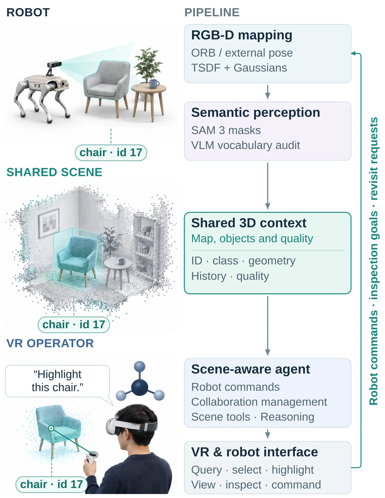
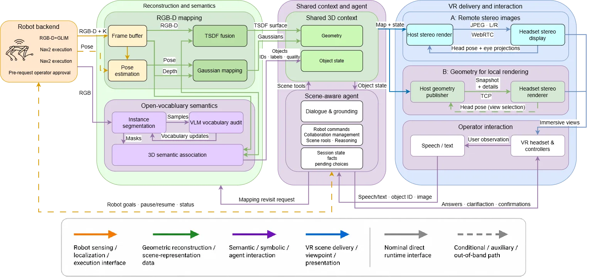
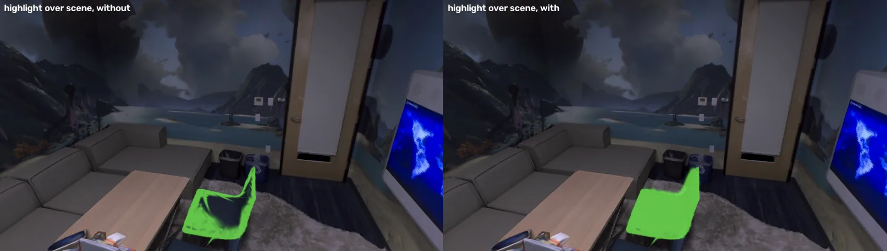
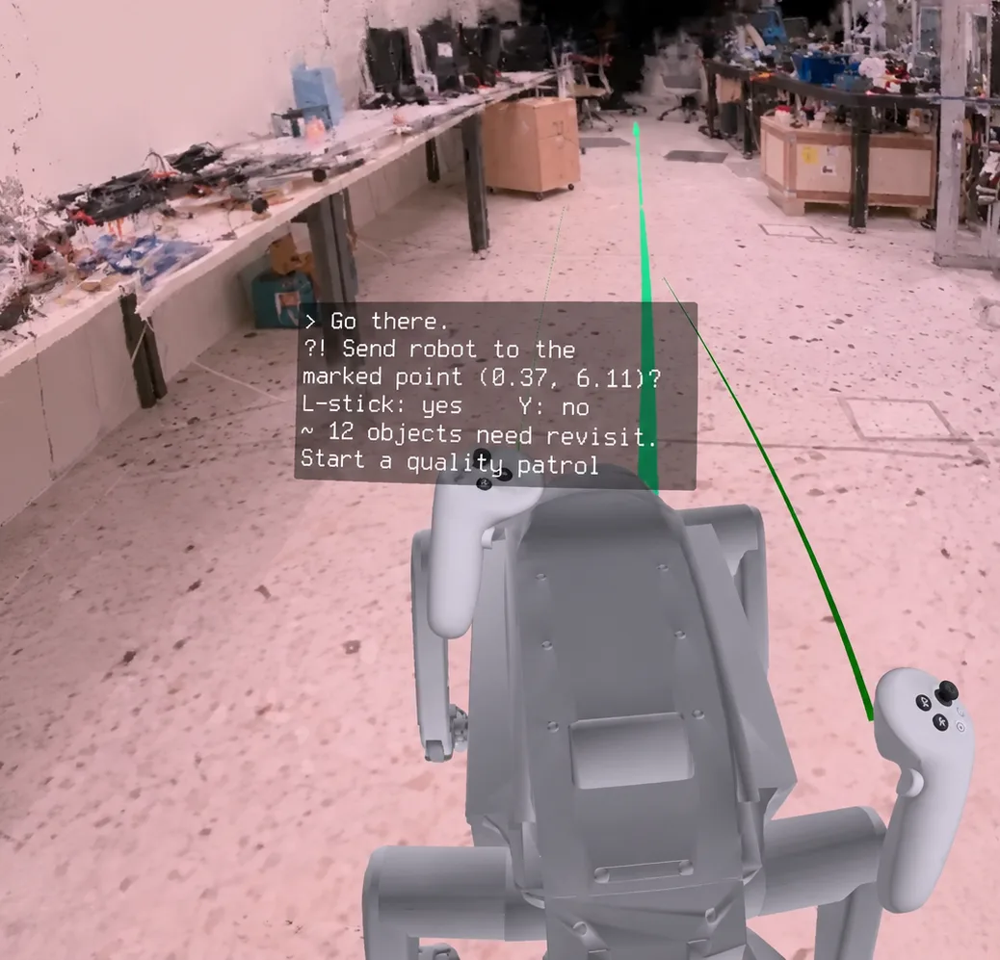
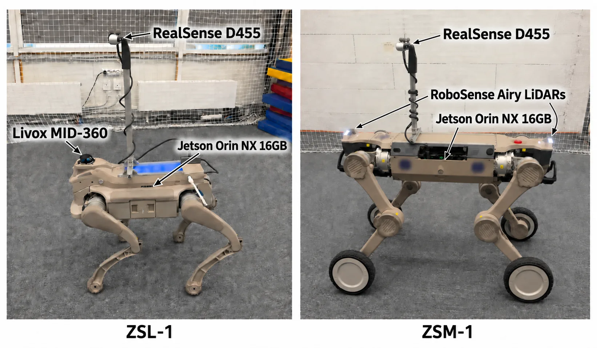

CognitiveReality：面向沉浸式协同 VR 遥操作的机器人无关语义高斯建图与 LLM 智能体
CognitiveReality: Robot-Agnostic Semantic Gaussian Mapping with an LLM Agent for Immersive Collaborative VR Teleoperation
把机器人在线构建的高斯—TSDF 地图升级为一个带持久物体 ID 与重建质量的版本化「场景模型」，让语音与指向通过类型化工具落到同一份状态上，并用影子跟踪与关键帧锚定 PnP 在定位中断时保住地图坐标一致性。
pose error during outages
tool exact match
navigation success
作者、单位与技术谱系 · Research context
作者与单位
研究脉络
- Gaussian-plus-SDF SLAM（Peng, Zhou & Shao, 2025）方法基座关系：提供高斯与 SDF 混合的在线重建设计，本文在其上加入可替换定位、振动门控与不确定度加权融合[arXiv 官方 HTML v1]
- GaussAnything（Maliukov, Kozlov, Plotnikov, Altamirano Cabrera & Tsetserukou, 2026，arXiv:2609.13859）团队前作关系：提供在独立头显上增量渲染与语义意图驱动精化的方法，本文的本地渲染模式沿用其思路[arXiv 官方 HTML v1]
- 在线开放词表高斯建图（LangSplat、Gaussian Grouping、OpenGS-SLAM、OnlinePG 等）上游方法关系：同为给高斯地图赋予语言或实例语义的路线，差异在是否维护持久身份与重建质量属性[arXiv 官方 HTML v1]
- 智能体—世界交互（SayPlan、ConceptGraphs、GSMem、3DGSNav、VISTA）上游方法关系：把结构化 3D 场景图或高斯地图暴露给语言智能体的既有范式，本文在此基础上加部署侧的类型化工具与确认门[arXiv 官方 HTML v1]
合作网络
- 论文署名与单位CognitiveReality 论文署名作者 → 斯科尔科沃科学技术研究院智能空间机器人实验室关系：署名单位[arXiv 官方 HTML v1]
- 团队接续（共同署名）GaussAnything（arXiv:2609.13859） → CognitiveReality（arXiv:2609.31418）关系：共同署名（同一实验室的相邻工作）[arXiv 官方 HTML v1]
- 重建后端依赖CognitiveReality 重建模块 → GPS-SLAM / Gaussian-plus-SDF 设计关系：明确技术依赖[arXiv 官方 HTML v1]
- 定位与导航栈依赖机器人执行侧 → GLIM 定位、Nav2 导航、ORB-SLAM3 内置跟踪器、ROS 2 Humble关系：明确技术依赖[arXiv 官方 HTML v1]
署名、单位、机器人平台、依赖与公开数据均来自论文作者块与方法/实验章节；团队接续关系以参考文献作者重叠与正文显式表述为依据（属基于来源的解读）。除署名与明确技术依赖外，未发现公开证据支持的资助、师生或合作项目关系，不作推断。
方法本质拆解 · What actually changed
是不是微调？
本文没有训练或微调任何视觉/语言模型：重建是沿用 GPS-SLAM 的高斯—SDF 在线优化（属于地图参数的持续优化，不是网络训练），语义用现成的 SAM3 分割器与本地 VLM，交互路由用本地部署的 Qwen3-VL-8B，全部按现成权重调用。发生变化的只有地图参数、语义词表状态与会话记忆。
有没有额外约束？
约束有三层。几何层：高斯初始化受射线投射深度与 TSDF 置信度过滤、按传感器噪声模型加权融合深度、并剪除几何不一致基元；语义层：Label Splats 只有在两张独立视角下几何一致的语义像素才能落在 SDF 表面，且被排除在光度光栅化之外；交互层：语言模型只允许输出类型化 JSON，必须通过参数完整性、物体存在性与合并后 ID 的一致性校验，机器人动作必须经操作员确认。
推理/后端到底做了什么？
推理链是“RGB-D → 高斯—TSDF 增量融合 → 每 2 秒导出场景模型 → 两层路由产出类型化决策 → 后校验 → 执行或待确认”。位姿方面有三层来源：机器人自身 SLAM、影子视觉跟踪、以及两者皆失效时的关键帧锚定 PnP；关键帧被当作锚点，因此不会重置全局地图。全程没有离线的全局平差与回环优化，也没有测试期模型拟合。
方法本质是什么？
本质是把地图变成“可被引用的持久状态”：用不用重置地图的降级定位保住坐标一致性，用冻结的语义高斯补齐语义覆盖，用版本化的符号场景模型把渲染、语言与机器人动作挂在同一组持久 ID 上，再用类型化工具与确认门把语言解释与执行分开。它没有做的是：不做全局平差与回环、不在确认时重新校验引用、也不保证脱离已验证的传感器与网络条件仍成立。
输入=机器人 RGB-D 流与（来自 SLAM/运动学/动捕/内置跟踪器的）位姿；改变的位置=地图的语义索引与物体身份层、以及定位中断期间的位姿来源；动作=高斯—TSDF 增量融合 + Label Splats 语义覆盖 + 影子跟踪与关键帧锚定 PnP 降级 + 类型化工具与确认门；直接效果=重建比基线高 2–8 dB、中断期位姿误差 1–8 cm、实机导航 26/30、重观测 20/20 并提升物体质量 2–5 dB。

桥接价值Bridge
桥接价值
这项工作表面上是遥操作界面，实质是把“地图”从渲染对象升级为共享状态：同一份带持久整数 ID、语义标签、质心、3D 包围盒与重建质量的场景模型，同时被机器人感知、语言智能体与 VR 操作员引用，因此“指哪个物体”“说的是哪张椅子”“去哪个目标”三件事情有了同一个可校验的指代基准。对我们的意义在于它把接口与失败模式拆得可以单独度量：重建质量（PSNR 等）与用户界面（帧率、延迟）分开测，智能体路由（工具精确匹配/完整调用正确率/沙箱效果正确率）分开测，机器人执行（导航到达率、重观测质量增益）分开测，并且在定位中断这一状态估计最脆弱的环节上给出 5–40 s 中断内 1–8 cm 的位姿误差。这套“先定义共享状态、再分别度量各层失败”的做法，比“端到端成功率”更能定位问题，值得直接借用。
方法与模块Method
方法摘要
重建后端沿用高斯—SDF 设计（深度融进 SDF 保证噪声下稳定，3D 高斯在融合表面上做照片级渲染），高斯初始化由光度误差与几何一致性共同引导、候选像素用射线投射深度与 TSDF 置信度过滤、参数以最近帧与选定关键帧异步周期优化并做几何不一致基元剪除；语义侧引入“Label Splats”——在两张独立视角下几何一致的语义像素直接放到 SDF 表面上的冻结语义高斯，它们只投票与携带语义标识、不进入光度光栅化，从而在保持渲染保真度的前提下把语义覆盖率补上。每 2 秒导出一份 JSON 场景模型（几何尺度、高斯数量、每个物体的类别与 ID、质心与包围盒、重建质量）。定位侧把机器人定位视为可替换的位姿源：主跟踪中断时用影子视觉跟踪估计到全局地图的变换；两者都失效时把新帧用 PnP-RANSAC 配准到最近三个 RGB-D 关键帧，高置信度配准被初始化为新关键帧以延伸跟踪链到未建图区域，因为锚点是存储的关键帧而不是地图渲染，恢复后可以无缝交接而不重置全局地图。交互侧的智能体不直接接触高斯表示，而是操作这份版本化符号场景模型：两层路由（确定性预路由 + schema 约束的语言模型路由，部署用本地 Qwen3-VL-8B），输出类型化 JSON 决策，再做参数完整性、物体存在性、合并后 ID 与状态一致性校验，机器人相关的动作还要经过操作员确认。VR 交付有两条路：远端双目图像流（主机渲染，头显负担小但受网络时延影响）与简化场景传输加本地渲染（只传增量高斯与更新网格，头显本地渲染）。
可迁移模块
① “影子跟踪 + 关键帧锚定 PnP”是一个明确可迁移的降级策略：主定位失效时先用次级视觉跟踪维持到全局地图的相对变换，两者都失效时用关键帧配准续链，并且坚持不重置全局地图；对照我们处理 GNSS 失锁或视觉退化时的降级逻辑，可以直接照这个分层结构做设计。② 用“独立视角几何一致”作为语义要素的准入条件（Label Splats）是一条廉价的几何校验规则，可类比我们在点云/地图中做多视一致性与不确定性过滤。③ 把交互接口压缩成一份带版本与校验的符号状态、所有执行动作都走类型化工具并经过确认门，是把“语言解释”与“执行”解耦的标准做法；对我们的自动化流水线同样适用：任何由模型生成的写操作都应先经过 schema 校验与存在性检查。④ 用“观测质量”作为主动决策的依据（按场景模型里质量最低的物体生成重观测请求）是主动感知的可复用闭环，可以直接对接到我们的建图质量评估与巡视策略。

证据Evidence
关键证据与数字
① 重建（表 1，与 GPS-SLAM 基线同帧、同参数、同外部位姿）：在 720p 四足序列 A 上前 1440 帧为 26.54 dB 对 22.86 dB；两台四旋翼动捕位姿飞行分别为 21.91 与 19.54 dB 对 16.11 与 11.44 dB；天工（Tien Kung）头戴相机在 8 m 融合范围内为 23.20 dB 对 15.32 dB；机械臂（UR10）动力学位姿 23.66 dB（质量档）与 24.23 dB（增强档）对 22.44 与 22.83 dB，作者说明即便把基线优化预算按每秒视频对齐也只提升 0.4 dB，因此增益不是参数问题。② 消融式增益：ZSL-1 四足 D455 上陀螺仪门控把 PSNR 从 18.09 提到 20.70 dB，配合预算校准的调度到 22.73 dB（接近无振动机身相机的 22.89 dB）；不确定度加权融合把序列 A 从 26.45 提到 27.00 dB，加三阶球谐到 27.35 dB；Label Splats 把 Replica office0 的语义覆盖率从 47.6% 提升到正文所述水平（该具体百分比在官方 HTML 中被公式渲染吞掉，待核验），且语义不改变渲染（office0 PSNR 有无语义均为 38.95 dB）。③ 定位中断：5–40 s 的定位中断（机器人 SLAM 与影子跟踪同时失效）期间位姿误差保持在 1–8 cm，中断窗口内渲染的地图与未中断参考难以区分。④ 语义（表 2，Replica 8 场景 51 类，零样本 3D 语义分割）：闭词表下 mIoU 29.5 对基线 HoloAgent-Memory 的 29.9（基本持平），但 mAcc 46.63 对 43.60、频率加权 f-mIoU 65.73 对 57.00、f-Acc 78.33 对 65.39（分别高 3.0、8.7、12.9 个点）；开口词表在线扩展会掉 12 mIoU（默认提示），改成结构感知清单提示可找回 5 个点。⑤ 智能体路由（1,471 个用例，240 个任务规格、12 个族、4 个录制场景）：工具精确匹配从规则基线的 48.33% 提升到 81.24%，完整调用正确率从 42.96% 到 72.88%，效果正确率 84.70%；后校验在成对比较中额外贡献 3.04 个百分点，71 个沙箱策略用例中没有产生不安全提议。⑥ 时间重放（167 个片段、87 个来源事件）：在有因果可用合并证据时，解析器在 117/167 个片段中正确重定向 101 个被吸收的标识。⑦ 机器人与 VR：30 次导航请求中 26 次到达（只计我方管线失败为 26/29＝0.90），20 次重观测请求全部执行并把覆盖物体的渲染 PSNR 提升 2–5 dB；VR 远端流为 54–84 主机 fps、请求到解码中位时延 25–46 ms，本地渲染模式上限 20 万驻留高斯、66–85 fps、约 9–10 ms GPU 帧时间、PC 到头显 PSNR 最高 36.7 dB；推送说话延迟 p50 1,422 ms / p90 1,993 ms；共享 GPU 试点中每分钟 12 条指令使高斯轮次时间增加 12.7%、峰值显存增加 3,294 MB 且无掉帧。
边界与下一步Limits & Next Step
边界与风险
作者承认的边界有四条：确认门目前只转发已解析的引用而不在确认时按更晚的地图更新重新校验，因此 40 个待确认用例保留的是提案时刻的解析结果；开放词表在线扩展会显著损失精度（默认提示下 −12 mIoU），需要换成结构感知提示才能找回部分；确认无不安全提议只是提案过滤的度量、不等于物理安全；运行时的资源结论是“所测工作包络”而不是通用实时保证。需要我们自己警惕的风险有三条。① 场景模型与地图之间的一致性风险：导航目标的三次失败中就有“记录的目标落点与实际标记点不符，原因是漂浮的噪声高斯”，说明渲染质量好并不等于几何落点可靠，落点必须另设校验。② 语义指标的口径风险：闭词表与开口词表两类行不可直接比较，基线 HoloAgent-Memory 用的是闭词表而本文给的是多配置结果，跨方法引用 mIoU 时需要核对词表口径。③ VLM 与地图的忠实性问题：在元数据控制实验中，命名目标一致率从“仅图像”的 24.7% 升到“图像＋元数据”的 95.9%、“仅元数据”为 99.3%，而在冲突元数据下模型有 91.8% 的用例复述了被注入的类别、只有 18.5% 承认冲突——这意味着该链路高度忠实于地图标签，因此“VLM 结果”不能当作独立的视觉识别精度来使用。
下一步实验
① 把“影子跟踪 + 关键帧锚定 PnP + 不重置全局地图”的分层降级策略移植到我们自己的估计链路，先在已有的 GNSS 失锁或视觉退化数据上做对照，报告失锁时段的位姿误差与恢复后的坐标一致性，这正是本文给出的可比较量（1–8 cm / 5–40 s）。② 复现“落点校验”这一最小改进：任何由语言或智能体选定的目标点，在写入执行队列前都用最新地图重新验证一次位置与可达性，用于消除本文暴露的漂浮高斯导致的目标偏移失败。③ 在我们自己的地图产品上加一个轻量“观测质量”字段，并按质量最低优先触发重观测，验证质量驱动的主动巡视能否稳定提升地图精度（本文给出的增益为 2–5 dB）。④ 把类型化工具 + schema 校验 + 确认门这套接口纪律，用到我们自动化流程中所有由模型生成的写操作上，并像本文一样分别统计“工具正确率/完整调用正确率/效果正确率”，而不是只看端到端成功率。⑤ 待核验项：代码与数据声明“接受后公开”，本次未取得，因此合并重定向的 101 个标识、语义覆盖率从 47.6% 提升到的具体值、以及每物体的 VLM 调用与场景耗时等细节需在取得材料后复核。





